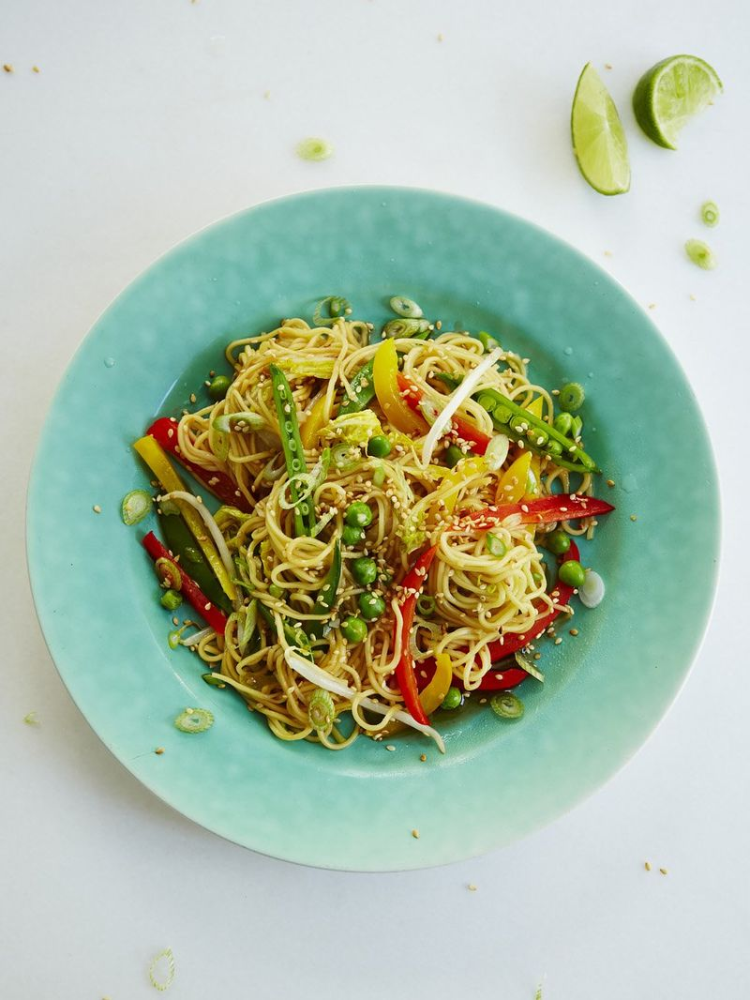

Stir-fry Vegetarian Noodles
\

Ingredients
- 250 g thin free-range egg noodles
- 2 limes
- 3 tablespoons plum sauce
- 1 tablespoon runny honey
- low-salt soy sauce
- 6 spring onions
- 2 cloves of garlic
- 3 cm piece of ginger
- 100 g sugar snap peas
- 1 red pepper
- 1 yellow pepper
- ¼ of a Chinese cabbage
- 100 g beansprouts
- 100 g frozen peas
- 2 tablespoons vegetable oil
- sesame oil , optional
Preparation Time
15 min
Instructions
- Cook the noodles according to packet instructions, then drain and refresh under cold running water and drain again – this will stop them from cooking further.
- Tip the noodles into a large mixing bowl, pulling them apart with your fingers, then put aside.
- Squeeze the juice from 1 lime into a small mixing bowl and stir in the plum sauce, honey and a dash of soy sauce.
- Trim and finely slice the spring onions, then peel and finely chop the garlic and ginger. Slice the sugar snap peas in half lengthways, then deseed and slice the peppers into 1cm strips and shred the Chinese cabbage.
- Put a large wok on a high heat and when screaming hot, add the vegetable oil, garlic and ginger. Fry for a few seconds, then add all the prepped veg and stir-fry everything together for 1 minute, before adding the noodles, beansprouts and frozen peas.
- Stir all the ingredients together, making sure nothing’s stuck to the bottom, then cover with a lid and cook for a couple of minutes.
- When the noodles and veg are hot through, push the mix to one side of the pan and pour in the sauce. When it starts bubbling, mix through the noodles, loosening with a splash of water, if needed.
- Remove from the heat, then taste and add a little more soy, if necessary. Drizzle lightly with sesame oil (if using), then serve up right away with the remaining lime cut into wedges for squeezing over.
Back to Home